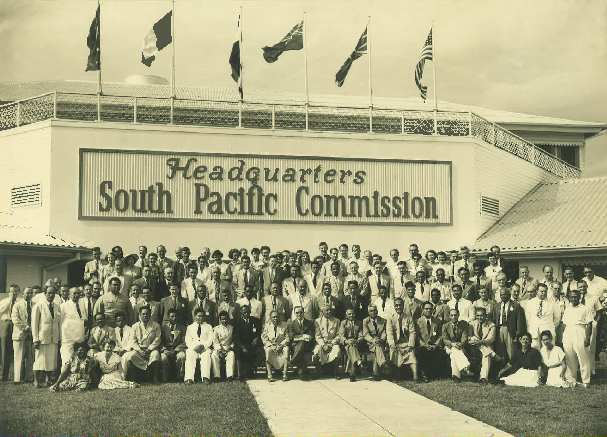

1940
Création de la section santé de la CPS avec un programme axé sur l'information épidémiologique

Création de la section santé de la CPS avec un programme axé sur l'information épidémiologique
Création de la section santé de la CPS avec un programme axé sur l'information épidémiologique, le bien-être maternel et infantile, la tuberculose, la filariose et la nutrition.
Une décennie d'expansion des programmes de santé publique
Ajout de la lèpre, malaria et maladies vénériennes au programme de travail.
L'éducation sanitaire devient prioritaire avec un programme de formations pour les professionnels.
Expansion des services de santé maternelle et infantile, hygiène du milieu et programmes d'éradication
Enquête OMS/CPS sur les services de protection maternelle et infantile pour réduire la mortalité dans cette population fragile.
Recrutement d'un ingénieur en santé publique pour l'hygiène du milieu et la gestion des déchets et eaux usées.
Programme d'éradication du paludisme en Mélanésie, de la filariose en Polynésie et de la tuberculose, lèpre et parasitose.
Mise en place d'activités sur la santé mentale.
Recrutement d'un spécialiste en santé bucco-dentaire.
Création du Service d'Information Épidémiologique et premières études sur l'urbanisation
.jpg)
Création du Service d'Information Épidémiologique pour collecter les données sur les maladies à déclaration obligatoire.
Étude sur les effets de l'urbanisation et l'alimentation occidentale sur la santé des habitants du Pacifique.
Focus sur les maladies non transmissibles : diabète, cancer et problèmes liés à l'alcool
Projet Diagnostic et prévention du diabète pour collecter des données et développer des outils éducatifs.
Création d'un registre des cancers en collaboration avec l'université d'Hawaii et l'École de médecine des Fidji.
Conférence CPS/OMS sur les problèmes liés à l'alcool dans les pays océaniens à Nouméa.
Lancement de PacNet et intensification de la lutte contre la tuberculose

Lancement de PacNet pour faciliter le partage rapide d'informations sur les risques sanitaires dans la région.
Projet océanien de lutte contre la tuberculose face à la progression de cette maladie.
Développement des réseaux de laboratoires et de lutte contre les infections

Réunion inaugurale du réseau de laboratoires LabNet.
Enquête multicentrique sur l'incidence de la leptospirose dans le Pacifique.
Création de PICNet, le réseau océanien de lutte contre les infections.
Programme régional 2-1-22 avec l'OMS pour une réponse coordonnée contre les MNT.
Assistance aux pays contre la grippe pandémique A(H1N1).
Renforcement de la surveillance et engagement pour le concept des îles-santé
Premier soutien à la surveillance renforcée lors du 11e Festival des arts du Pacifique aux Salomon.
Cartographie des alertes pour les maladies épidémiques et émergentes en Océanie.
Déclaration de Yanuca réaffirmant l'engagement en faveur du concept des îles-santé.
Premier sommet océanien sur les maladies non transmissibles.
Réponse à la pandémie de COVID-19 et poursuite de l'engagement pour la santé publique
Soutien aux pays pour répondre à la pandémie de COVID-19.